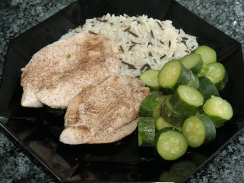

| Zutaten für 2 Personen: | |
| 2 | Pouletbrüstchen |
| Pfeffer | |
| einige Tropfen | Worcestershiresauce |
| 200 g | kleine gelbe Zucchetti |
| 200 g | grüne Zucchetti |
| 1 Prise | Salz |
| 2-3 dl | Hühnerbouillon |
| 1 Zweig | Oregano |
Pouletbrüstchen mit Pfeffer und wenig Worcestershiresauce würzen.
Zucchetti waschen und in Scheiben schneiden.
Hühnerbouillon mit Oreganozweig aufkochen und Gemüse und Pouletbrüstchen rund 10 Minuten im Dampf garen.
Anschliessend leicht salzen. Anrichten und nach Wunsch etwas Bouillon darüber träufeln.
Tipp: Gut zu diesem Gericht passt Vollreis, gemischt mit etwas Wildreis.
Eine Zeitung
Ich habe das Rezept am 1.1.2004 versucht. Die Probleme fingen mit dem dämpfen an da ich kein geeignetes Kochwerkzeug zur Verfügung hatte. Entsprechend habe ich das Rezept völlig abgewandelt und das Poulet gebraten und die Zucchetti in der Bouillon gekocht. Es schmeckte dennoch sehr gut. Die Worcestershiresauce gibt dem Fleisch eine interessante Note. Die Zucchetti nehmen den Geschmack der Bouillon an was auch gut schmeckt. Der Aufwand ist aber relativ gross für so ein einfaches Rezept weshalb es bloss 2 Sterne bekommt.
Am 2.6.2007 für das Foto gemacht. Das Fleisch war etwas trocken und die Zucchetti etwas langweilig. Hätte dem Heute 3 Sterne gegeben. Vielleicht hätte ich das Fleisch nicht eine halbe Stunde in der Worcestershiresauce marinieren sollen? Das Aufwandsargument kann ich nicht mehr nachvollziehen.
@LINKBACK_TAG@ @WAKELOCK@